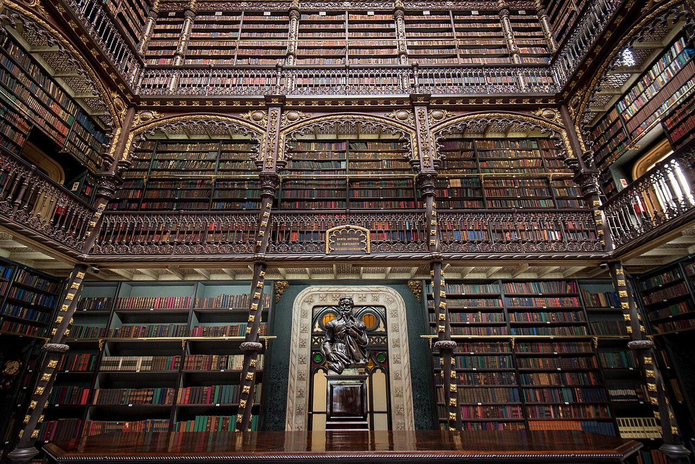

Manifesto
O que pode a crítica?
A Revista Experimental de Crítica Literária nasce da optativa Cânones da crítica internacional: não como catálogo de escolas, mas como oficina do gesto — descrever, interpretar, historicizar, avaliar, deslocar, contraler, metacriticar, disputar valor.
Real Gabinete Português de Leitura, Rio de Janeiro. Foto: Donatas Dabravolskas / Wikimedia Commons (CC BY-SA 4.0).